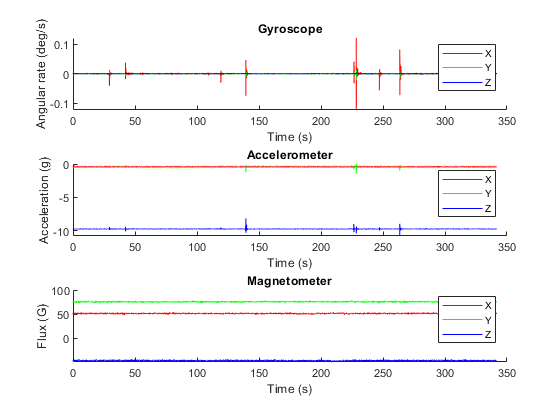
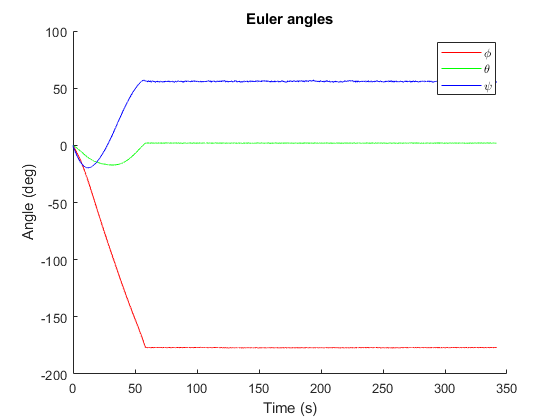

Contents
% ExampleScript.m % % This script demonstrates use of the MadgwickAHRS and MahonyAHRS algorithm % classes with example data. ExampleData.mat contains calibrated gyroscope, % accelerometer and magnetometer data logged from an AHRS device (x-IMU) % while it was sequentially rotated from 0 degrees, to +90 degree and then % to -90 degrees around the X, Y and Z axis. The script first plots the % example sensor data, then processes the data through the algorithm and % plots the output as Euler angles. % % Note that the Euler angle plot shows erratic behaviour in phi and psi % when theta approaches ±90 degrees. This due to a singularity in the Euler % angle sequence known as 'Gimbal lock'. This issue does not exist for a % quaternion or rotation matrix representation. % % Date Author Notes % 28/09/2011 SOH Madgwick Initial release % 13/04/2012 SOH Madgwick deg2rad function no longer used % 06/11/2012 Seb Madgwick radian to degrees calculation corrected
Start of script
addpath('quaternion_library'); % include quaternion library close all; % close all figures clear; % clear all variables clc; % clear the command terminal
Import and plot sensor data
load('IMUdiamDonny3.mat'); figure('Name', 'Sensor Data'); axis(1) = subplot(3,1,1); hold on; plot(time, Gyroscope(:,1), 'r'); plot(time, Gyroscope(:,2), 'g'); plot(time, Gyroscope(:,3), 'b'); legend('X', 'Y', 'Z'); xlabel('Time (s)'); ylabel('Angular rate (deg/s)'); title('Gyroscope'); hold off; axis(2) = subplot(3,1,2); hold on; plot(time, Accelerometer(:,1), 'r'); plot(time, Accelerometer(:,2), 'g'); plot(time, Accelerometer(:,3), 'b'); legend('X', 'Y', 'Z'); xlabel('Time (s)'); ylabel('Acceleration (g)'); title('Accelerometer'); hold off; axis(3) = subplot(3,1,3); hold on; plot(time, Magnetometer(:,1), 'r'); plot(time, Magnetometer(:,2), 'g'); plot(time, Magnetometer(:,3), 'b'); legend('X', 'Y', 'Z'); xlabel('Time (s)'); ylabel('Flux (G)'); title('Magnetometer'); hold off; linkaxes(axis, 'x');
Process sensor data through algorithm
AHRS = MadgwickAHRS('SamplePeriod', 1/256, 'Beta', 0.1); % AHRS = MahonyAHRS('SamplePeriod', 1/256, 'Kp', 0.5); quaternion = zeros(length(time), 4); for t = 1:length(time) AHRS.Update(Gyroscope(t,:) * (pi/180), Accelerometer(t,:), Magnetometer(t,:)); % gyroscope units must be radians quaternion(t, :) = AHRS.Quaternion; end
Plot algorithm output as Euler angles
The first and third Euler angles in the sequence (phi and psi) become unreliable when the middle angles of the sequence (theta) approaches ±90 degrees. This problem commonly referred to as Gimbal Lock. See: http://en.wikipedia.org/wiki/Gimbal_lock
euler = quatern2euler(quaternConj(quaternion)) * (180/pi); % use conjugate for sensor frame relative to Earth and convert to degrees. figure('Name', 'Euler Angles'); hold on; plot(time, euler(:,1), 'r'); plot(time, euler(:,2), 'g'); plot(time, euler(:,3), 'b'); title('Euler angles'); xlabel('Time (s)'); ylabel('Angle (deg)'); legend('\phi', '\theta', '\psi'); hold off;